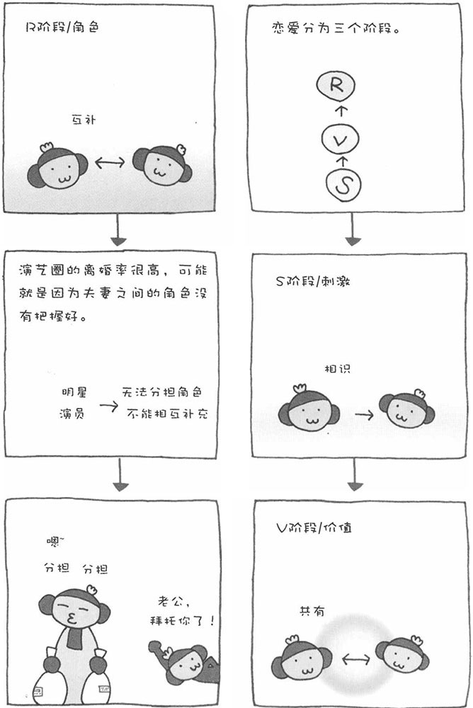

其实，恋爱也是有理论可循的。在心理学家默斯特因（Murstein）的"SVR理论"中，认为两个人从相识到结婚，分为三个阶段。
S阶段刺激阶段（Stimulus）
受到对方外表、行为、性格等的刺激。
V阶段价值阶段（Value）
思维方式和行为模式相似，对感情顺利发展很重要。
R阶段角色阶段（Role）
分配角色，相互补充。
当两个人初次见面时，如果被对方的外表、行为和性格等吸引，就会彼此产生好感，这一阶段就是所谓的刺激阶段。在这个阶段，除了对方的外表、行为和性格等因素外，有关对方的传闻也是重要的信息。彼此产生好感后，如果开始谈恋爱，就进入第二个阶段——价值阶段。在这个阶段，两个人在一起的时间多了起来，一起做的事情也多了起来。此时，双方的兴趣爱好和价值观是否相似是影响感情能否顺利发展的重要因素。
如果要进一步发展，不仅需要双方的价值观相似，还要能分担角色、相互补充。例如，具有支配性格的女性和服从性格的男性，喜欢帮助别人的女性和寻求帮助的男性等等。实际上，除了默斯特因之外，很多心理学家也都提出，夫妻关系要想顺利发展，夫妻双方能够互相补充是非常重要的。
如果将SVR理论进行简单的概括，那就是"受到对方外表、行为、性格等的吸引而相识，并产生好感"，"彼此的价值观相似，从而成为恋人"，"如果能相互补充，就可以结婚成为夫妻"。没能走到婚姻殿堂的情侣，可能是因为不能互相补充。如果在谈恋爱阶段就分手，很可能是因为彼此的价值观差距太大。
